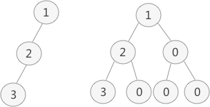
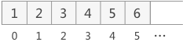
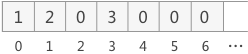
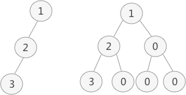
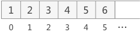
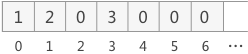

二叉树的顺序存储结构（看了无师自通）
二叉树的存储结构有两种，分别为顺序存储和链式存储。本节先介绍二叉树的顺序存储结构。
二叉树的顺序存储，指的是使用顺序表（数组）存储二叉树。需要注意的是，顺序存储只适用于完全二叉树。换句话说，只有完全二叉树才可以使用顺序表存储。因此，如果我们想顺序存储普通二叉树，需要提前将普通二叉树转化为完全二叉树。

图 1 普通二叉树的转化
图 1 中，左侧是普通二叉树，右侧是转化后的完全（满）二叉树。
解决了二叉树的转化问题，接下来学习如何顺序存储完全（满）二叉树。
完全二叉树的顺序存储，仅需从根节点开始，按照层次依次将树中节点存储到数组即可。

图 2 完全二叉树示意图
例如，存储图 2 所示的完全二叉树，其存储状态如图 3 所示：

图 3 完全二叉树存储状态示意图
同样，存储由普通二叉树转化来的完全二叉树也是如此。例如，图 1 中普通二叉树的数组存储状态如图 4 所示：

图 4 普通二叉树的存储状态
由此，我们就实现了完全二叉树的顺序存储。
不仅如此，从顺序表中还原完全二叉树也很简单。我们知道，完全二叉树具有这样的性质，将树中节点按照层次并从左到右依次标号（1,2,3,...），若节点 i 有左右孩子，则其左孩子节点为 2*i，右孩子节点为 2*i+1。此性质可用于还原数组中存储的完全二叉树，也就是实现由图 3 到图 2、由图 4 到图 1 的转变。
二叉树的顺序存储，指的是使用顺序表（数组）存储二叉树。需要注意的是，顺序存储只适用于完全二叉树。换句话说，只有完全二叉树才可以使用顺序表存储。因此，如果我们想顺序存储普通二叉树，需要提前将普通二叉树转化为完全二叉树。
有读者会说，满二叉树也可以使用顺序存储。要知道，满二叉树也是完全二叉树，因为它满足完全二叉树的所有特征。
普通二叉树转完全二叉树的方法很简单，只需给二叉树额外添加一些节点，将其"拼凑"成完全二叉树即可。如图 1 所示：
图 1 普通二叉树的转化
图 1 中，左侧是普通二叉树，右侧是转化后的完全（满）二叉树。
解决了二叉树的转化问题，接下来学习如何顺序存储完全（满）二叉树。
完全二叉树的顺序存储，仅需从根节点开始，按照层次依次将树中节点存储到数组即可。
图 2 完全二叉树示意图
例如，存储图 2 所示的完全二叉树，其存储状态如图 3 所示：

图 3 完全二叉树存储状态示意图
同样，存储由普通二叉树转化来的完全二叉树也是如此。例如，图 1 中普通二叉树的数组存储状态如图 4 所示：

图 4 普通二叉树的存储状态
由此，我们就实现了完全二叉树的顺序存储。
不仅如此，从顺序表中还原完全二叉树也很简单。我们知道，完全二叉树具有这样的性质，将树中节点按照层次并从左到右依次标号（1,2,3,...），若节点 i 有左右孩子，则其左孩子节点为 2*i，右孩子节点为 2*i+1。此性质可用于还原数组中存储的完全二叉树，也就是实现由图 3 到图 2、由图 4 到图 1 的转变。
编写本节实现代码，需要对二叉树进行层次遍历，这个知识点本章有单独一节做详细介绍，这里不再给出具体的代码实现。
关注公众号「站长严长生」，在手机上阅读所有教程，随时随地都能学习。内含一款搜索神器，免费下载全网书籍和视频。

微信扫码关注公众号